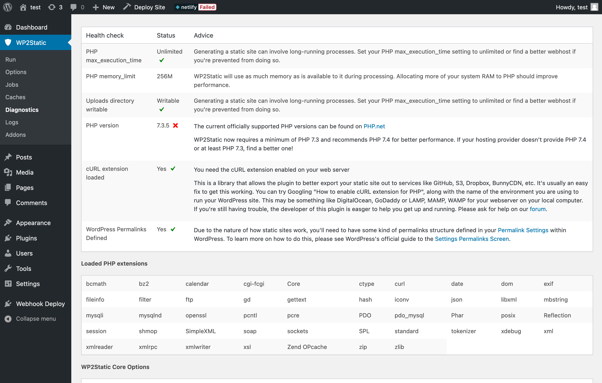

3 minute read
WordPress Plugins
Required expertise level : Beginner / Intermediate
Platform : Gnu/Linux | macOS | MS Windows | BSD
Last tested and confirmed : January 2022
WP2Static
WP2Static options
WP2Static can be considered as the most optimal plugin for the purpose of generating and updating a static mirror.
This plugin also offers different deployment sub-plugins which can configure direct deployments to platforms like Amazon S3 and GitHub.
However, it’s plugin development process itself doesn’t seem to be stable, at the time of writing these documentations, it appears to be transitioning to a new approach and undergoing big changes.
An old version of the plugin was recently flagged as closed in WordPress’s plugins platform, and the developed published his reasoning behind this approach.
Two different versions of the plugin however will continue to be available through the developer’s website and GitHub repository.
The old version renamed as static-html-output-plugin, will be available pre-built and ready to install on the website download section.
The new version named as WP2Static, while still being considered as experimental, it performed well in our testing but it needs to be built from the source before installing on WordPress.
Downloading and building the new plugin
-
Clone the repository.
git clone https://github.com/WP2Static/wp2static.git -
Install Composer and PHP on your local machine.
-
Move to the plugins source code directory.
-
Build the plugin using
composer install -
Compress the plugin directory into a .zip archive, you should find the resulted archive in your home directory under
/Downloads.composer build wp2static.zip
Note
Same steps are required for each sub-plugin which you will need for automating deployments to differant hosting platforms such as Amazon S3 or GitHub.
-
Sub-plugins should be installed manually as separate plugins on WordPress.
-
Sub-plugins will show under Add-Ons section in WP2Static settings and needs to be enabled and configured.
WP2Static settings and configuration
Select which content types should be included in the mirror, and the deployment URL
After installing any deployment Add-On it should be displayed here
Example for Amazon S3 deployment Add-On options
Here you will find useful diagnostic information about your installation and it’s compatibility with the plugin requirements
Simply static
Simply Static options
Simply Static is a WordPress Plugin with similar functionality to WP2Static. However, it comes with fewer features and might not fit the needs of a big and/or very frequently updated website, as for example, it doesn’t support incremental builds for the static mirror, which means it needs to go through the whole process every time a build is triggered.
Furthermore, Simply Static doesn’t support automatic builds triggering with every new post, so a new build can only be triggered manually, which makes this plugin more fit for small blogs or rarely updated websites.
Simply Static settings and configuration
Simply Static options
Note
-
You can set the
Delivery MethodtoLocal Directoryto have the generated static files stored on the same server/machine -
Make sure the web-server user have write privileges on the selected directory
-
If you are planning on hosting your static website on an object storage platform such as S3, you should make sure to
Use relative URLs
Here you will find useful diagnostic information about your installation and it’s compatibility with the plugin requirements